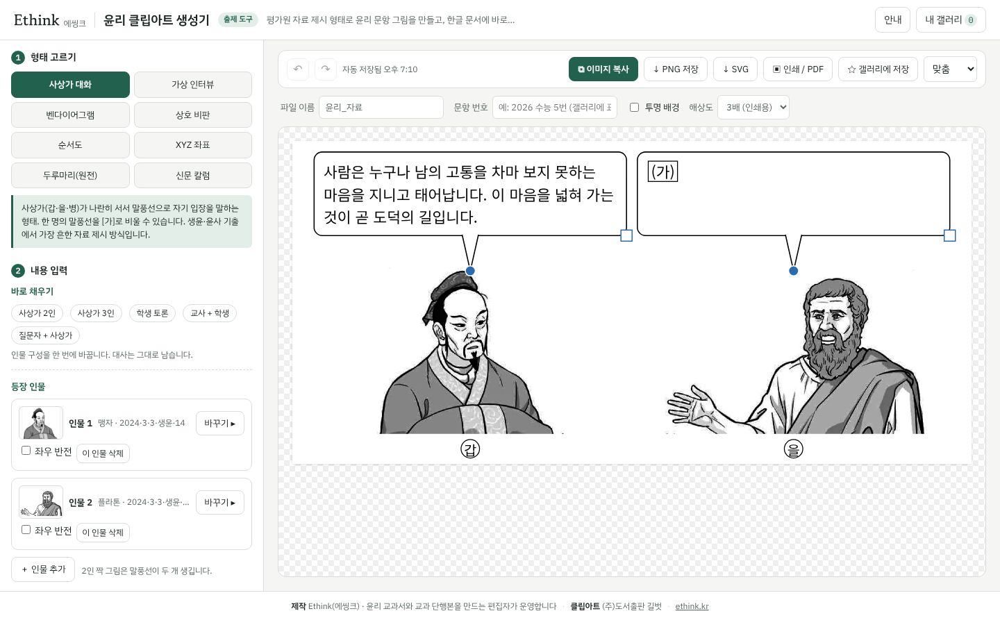
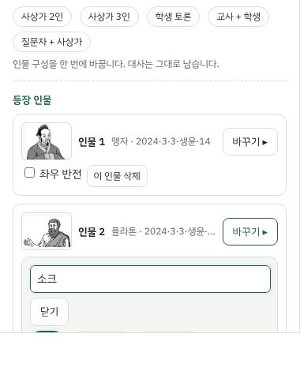
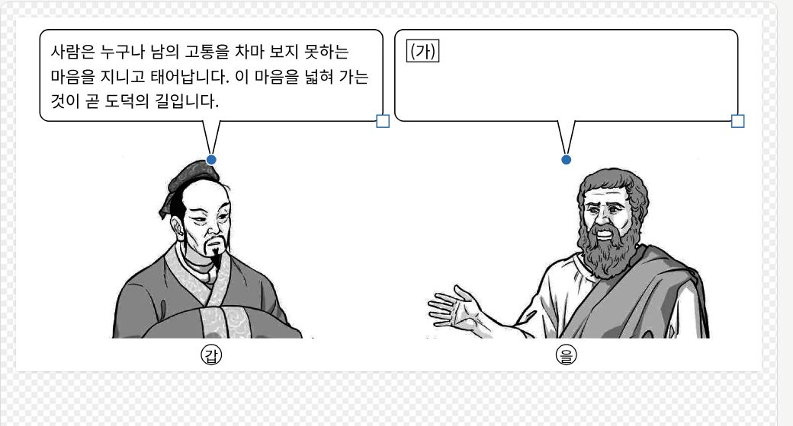
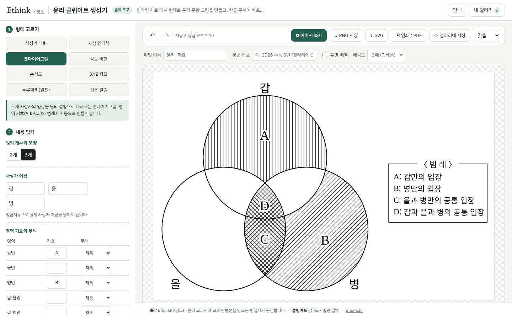
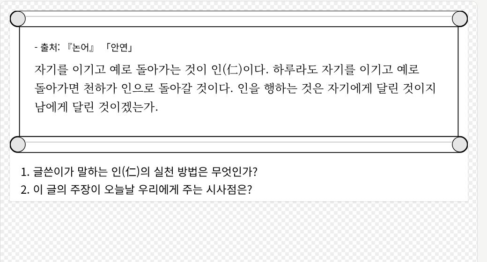
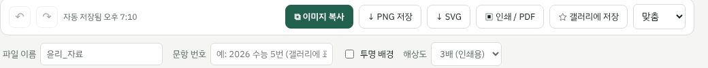

윤리 클립아트 생성기 사용 설명서
평가원·교육청 윤리 문항의 자료 제시 그림을 같은 형태로 만들어 한글(HWP) 시험지와 활동지에 붙여 넣는 도구입니다. 설치할 것은 없고, 브라우저(크롬·엣지·사파리)에서 바로 씁니다.
1. 화면 구성

왼쪽이 입력 패널(형태 고르기 → 내용 입력 → 꾸미기), 오른쪽이 미리보기와 저장 단추입니다.
- 형태 고르기 — 사상가 대화·가상 인터뷰(인물 삽화), 벤다이어그램·상호 비판·순서도·XYZ 좌표(도식), 두루마리·신문 칼럼(양식) 가운데 고릅니다.
- 내용 입력 — 고른 형태에 맞는 입력 칸이 나타납니다. 입력하는 즉시 미리보기가 바뀝니다.
- 꾸미기 — 한글 글꼴(고딕·명조), 글자 크기, 글상자·표식·가림 상자 추가.
2. 사상가 대화 만들기
인물 고르기

「바꾸기 ▸」를 누르면 검색창과 목록이 열립니다. 사상가 이름이나 시험(예: 2025 수능)으로 찾습니다.
- 사상가 1인 / 2인 짝 그림 / 학생·질문자 칩으로 걸러 볼 수 있습니다. 2인 짝 그림을 고르면 말풍선이 두 개 생깁니다.
- 좌우 반전으로 인물이 바라보는 방향을 바꿉니다. ＋ 인물 추가로 최대 4명(짝 그림 포함)까지 둘 수 있습니다.
- 바로 채우기의 「사상가 2인·3인」「학생 토론」「교사 + 학생」「질문자 + 사상가」는 인물 구성을 한 번에 바꿉니다. 대사는 그대로 남습니다.
말풍선 다루기

말풍선을 끌어 옮기고, 오른쪽 아래 흰 네모로 크기를, 파란 점으로 꼬리 방향을 바꿉니다.
- 미리보기의 말풍선을 누르면 왼쪽 입력 칸이 함께 선택됩니다. 방향키로 1칸(Shift는 10칸)씩 옮길 수 있습니다.
- 「말풍선 높이 맞추기」를 켜 두면 모든 말풍선이 가장 긴 대사 높이로 맞춰집니다(평가원 문항의 기본 모양). 끄면 대사 길이만큼만 그려집니다.
- 「말풍선 위치·크기 되돌리기」로 개별 말풍선을, 꾸미기의 「↺ 위치 초기화」로 전체를 처음 자리로 돌립니다.
- 이름표는 인물 아래 원문자(㉮), 말풍선 위 글자, 없음 가운데 고릅니다. 이름표 칸에 ‘갑·을·병’ 대신 사상가 이름을 넣으면 정답지용 그림이 됩니다.
3. 입력 표기법
| 입력 | 결과 | 쓰임 |
|---|
[가] | 네모 테두리 안의 (가) | 비워 둘 말풍선·빈칸 표시 |
[ ] | 빈 네모 | 글자 없이 빈칸만 표시 |
_이 왕_ | 이 왕 (밑줄) | 밑줄 친 부분을 묻는 문항 |
| Enter | 줄바꿈 | 상자 폭에 맞춰 자동으로도 줄이 바뀝니다 |
4. 도식과 양식

벤다이어그램은 원의 개수, 영역 기호, 무늬만 정하면 범례가 자동으로 만들어집니다.
- 벤다이어그램 — 기호를 비운 영역은 무늬와 기호가 빠집니다. 범례 문구는 「자동 범례를 칸에 불러오기」로 가져와 직접 고칠 수 있습니다.
- 상호 비판 — 쓰지 않는 화살표의 체크를 끄면 한쪽 방향만 남습니다. 범례·예시 상자는 따로 켜고 끕니다.
- 순서도 — 네 가지 틀 가운데 고르고 출발 조건·판단 기호·결과를 넣습니다. 실선은 ‘예’, 점선은 ‘아니요’입니다.
- XYZ 좌표 — 꼭짓점 여덟 개에 기호를 넣습니다. 비운 꼭짓점은 점이 사라집니다.
- 도식 글자 옮기기 — 꾸미기의 「✥ 도식 글자 위치 옮기기」를 켜면 기호·이름·범례를 끌어서 옮길 수 있습니다.

두루마리는 출처·본문(명조)·탐구 질문으로 구성됩니다. 신문 칼럼은 신문 이름·날짜·제목·1~2단 본문입니다.
5. 저장하고 한글에 붙여 넣기

이미지 복사 · PNG 저장 · SVG · 인쇄/PDF · 갤러리에 저장
- 이미지 복사를 누르고 한글 문서에서
Ctrl+V. 가장 빠른 방법입니다. 복사가 막힌 브라우저에서는 PNG 저장을 쓰세요.
- PNG 저장 — 해상도 2·3·4배 가운데 고릅니다. 시험지 인쇄용은 3배를 권합니다. 「투명 배경」을 켜면 흰 바탕 없이 저장됩니다.
- SVG — 벡터 파일. 일러스트레이터·파워포인트에서 더 고칠 때 씁니다.
- 인쇄 / PDF — 브라우저 인쇄 창이 열립니다. 대상을 ‘PDF로 저장’으로 바꾸면 PDF가 됩니다.
- 파일 이름 칸의 글자가 저장 파일 이름 앞에 붙습니다. 문항 번호는 갤러리 카드에 표시됩니다.
한글에 붙여 넣은 그림이 흐리면 PNG 해상도를 높이거나, 한글에서 그림을 선택해 「개체 속성 → 원래 크기」로 맞춘 뒤 줄이세요.
6. 내 갤러리와 작업 이어 하기
- 「☆ 갤러리에 저장」 또는
Ctrl+S로 현재 그림과 설정을 저장합니다. 상단 「내 갤러리」에서 불러오기·PNG 저장·삭제를 합니다.
- 갤러리와 입력 내용은 이 브라우저(기기)에만 저장됩니다. 다른 기기·브라우저나 시크릿 창에서는 보이지 않습니다. 최대 40개까지 보관합니다.
- 작업 중 내용은 자동 저장되어 창을 닫았다 열어도 남아 있습니다.
Ctrl+Z로 되돌릴 수 있습니다.
7. 오프라인으로 쓰기
안내 창의 「오프라인용 내려받기」로 받은 HTML 파일 하나에 그림과 코드가 모두 들어 있습니다. 인터넷이 없는 교실 컴퓨터에서도 두 번 눌러 열면 똑같이 동작합니다. (갤러리는 그 컴퓨터의 브라우저에 저장됩니다.)
8. 이용 안내
- 사상가 인물 삽화는 (주)도서출판 길벗이 윤리 교과서 교수학습 자료로 제작한 클립아트입니다. 수업·평가 자료 제작에만 쓰고, 삽화만 따로 모아 재배포하거나 판매하지 마세요.
- 원전·사료를 인용할 때는 출처를 정확히 적어 주세요. 입력한 내용은 서버로 보내지지 않습니다.
- 문의는 hello@ethink.kr로 보내 주세요.